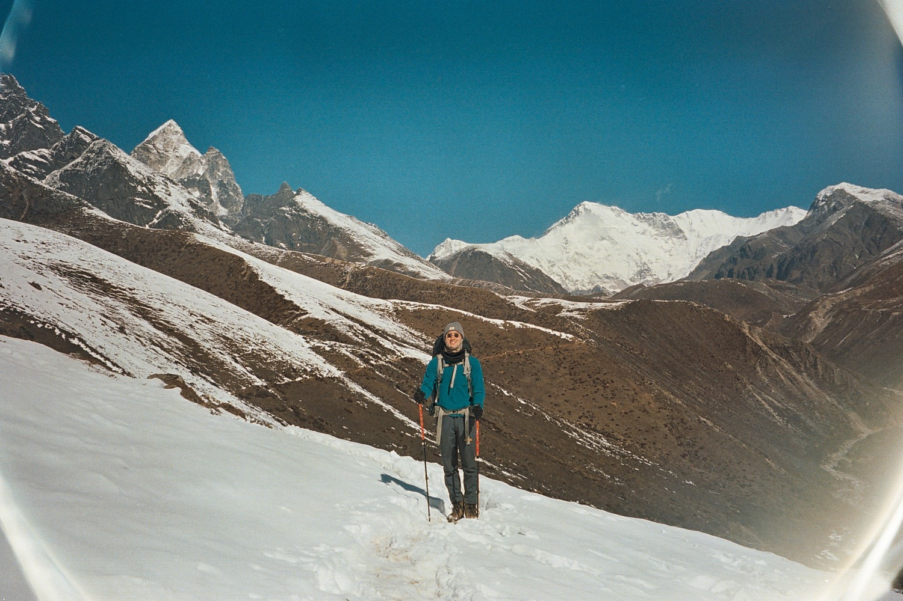

My story
How I came to this work.
Moving to London for medical school unsettled an identity I had felt confident inhabiting. In a new environment, I struggled to find familiar ground. I experienced anxiety, a sense of not belonging, and sometimes panic. I turned to meditation for help.
Over the following years, my experimentation and investigation into the nature of mind and reality deepened. Eventually, I took a year out of medical school to travel. With more time to practise, I continued exploring the challenges and insights I was encountering through meditation and other practices.
During that year, a climbing injury left me unable to move freely for several months. That time gave me an opportunity to feel and process emotions I had previously hidden from myself.
Later, I went to Nepal to volunteer. I began meditating regularly for about an hour a day, while learning about how other cultures understand mind and reality.

When COVID arrived, isolation brought further time for practice. My experience with meditation and strong emotions gave me something to offer, and I began guiding meditations for friends.
I went on to train with Jack Kornfield and Tara Brach through their two-year Mindfulness Meditation Teacher Certification Program. After completing the course, I left medicine and devoted more of my life to this work of learning to live with greater ease and clarity.
I later trained with David Nichtern at Dharma Moon, where my appreciation for simplicity and precision deepened.
I appreciate that simple instructions can bring great freedom.